The more we use AI, the more it can fail badly, and for many teams evaluation is the hardest part of shipping an AI app. Foundation models are hard to evaluate: they are smart, open-ended, black boxes, and they saturate benchmarks fast, while tooling for evaluation lags behind the rest of AI engineering. The chapter first explains language-modeling metrics (entropy, cross entropy, bits-per-character/byte and perplexity) and what they are useful for. Then it covers exact evaluation: functional correctness (does the code pass tests? pass@k) and similarity to reference answers (exact match, lexical overlap such as BLEU/ROUGE and edit distance, and semantic similarity using embeddings). Next comes the rising star, AI as a judge: how to prompt one, why it is attractive, and its limits (inconsistency, non-standard criteria, cost and latency, self/position/verbosity bias), plus which models can judge, including small specialised judges. Finally, comparative evaluation ranks models from head-to-head matches (Elo, Bradley–Terry, Chatbot Arena), with its own problems of scale, quality control and "better isn't the same as good enough".
The chapter moves from the oldest, most exact measures to the newest, most flexible ones. Each step exists because the step before it can't handle open-ended answers well enough. Orange boxes are the key idea each row hands to the next.
The more AI gets used, the more chances it has to fail in a way that really hurts. The book lists real failures from the short life of foundation models so far:
If you have no way to quality-control AI outputs, the risk can outweigh the benefit for many applications. Teams rushing to adopt AI soon find that the biggest hurdle is evaluation; for some apps, working out how to evaluate takes most of the development effort. (Footnote 1: in December 2023, OpenAI cofounder Greg Brockman tweeted that evals are surprisingly often all you need.)
Because evaluation matters so much and is so complex, the book gives it two chapters:
Evaluation is discussed in its own chapters, but it must be thought about as part of the whole system. Its two jobs are to reduce risk and find opportunities. To reduce risk you first find where your system is likely to fail and design evaluation around those spots. Often that means redesigning the system so failures are visible. If you don't understand where the system fails, no number of metrics or tools will make it robust.
Because evaluation is hard, many people settle for word of mouth ("someone said model X is good") or eyeballing results. Footnote 2: a 2023 a16z study found 6 of 70 decision makers evaluated models by word of mouth. Footnote 3: eyeballing is also called a vibe check. Both add risk and slow down iteration. The fix is to invest in systematic evaluation so results are more reliable.
A new dabbawala route. You wouldn't trust "my cousin says the route works" (word of mouth) or "I watched one delivery, looked fine" (vibe check). You'd count late and wrong deliveries every day, and you'd first figure out where things go wrong (the train change at Dadar, the building with no lift) and put a checker there. Where it breaks: a delivery is either right or wrong; an AI answer can be "partly right, nicely written, slightly misleading", which is exactly why evaluating AI needs several methods.
A traditional program has a spec, so tests define correctness. A generative model has no single right output, and it fails in ways that look fine on the surface (fluent but false). So evaluation has to be designed around failure modes, and the system has to expose enough of its internals (retrieved context, tool calls, intermediate steps) for those failures to be seen and measured.
"How do you know your LLM feature works?" Say: "Not by vibe checks. I list where the system can fail, make those points observable, and attach an evaluation to each: exact checks where possible (tests, schema validation), similarity to references where I have them, AI judges for subjective qualities, and humans to spot-check. For an agent pipeline that means scoring retrieval, tool calls and the final answer separately."
Evaluating ML models was always hard; foundation models make it harder. The book gives these reasons:
Footnote 4: when OpenAI's o1 came out in September 2024, Fields medalist Terence Tao compared working with it to working with "a mediocre, but not completely incompetent, graduate student", and guessed one or two more iterations might reach the level of a competent graduate student. People joked that if the brightest human minds are already needed to evaluate AI, no one will be qualified to evaluate future models.
The new challenges brought many new methods and benchmarks. Published papers on LLM evaluation grew roughly exponentially in the first half of 2023, from 2 a month to almost 35 a month.
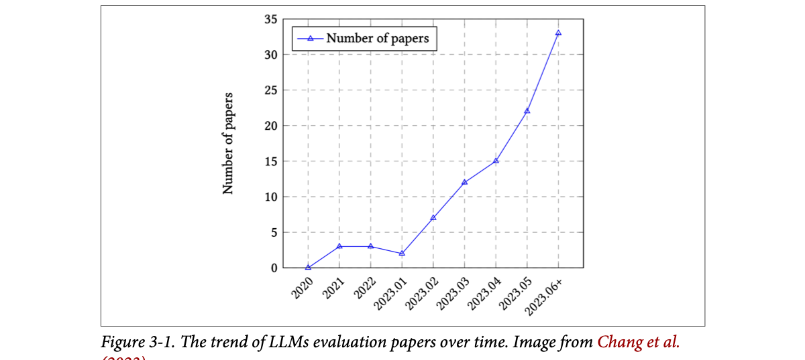
How to read this figure. The x-axis is time: whole years for 2020–2022, then single months of 2023. The y-axis counts evaluation papers. The line stays flat at 0–3 papers until January 2023, then climbs every month (about 7, 12, 15, 22) to about 33 in June 2023 and after. The point: right after ChatGPT, research suddenly cared a lot about how to evaluate LLMs.
Huyen's own analysis of the top 1,000 AI repositories on GitHub (ranked by stars) found over 50 dedicated to evaluation as of May 2024. Footnote 5 gives the method: she searched repos with at least 500 stars for the keywords "LLM", "GPT", "generative" and "transformer", and crowdsourced missing repos through her website. Plotted by creation date, the count grows roughly exponentially.
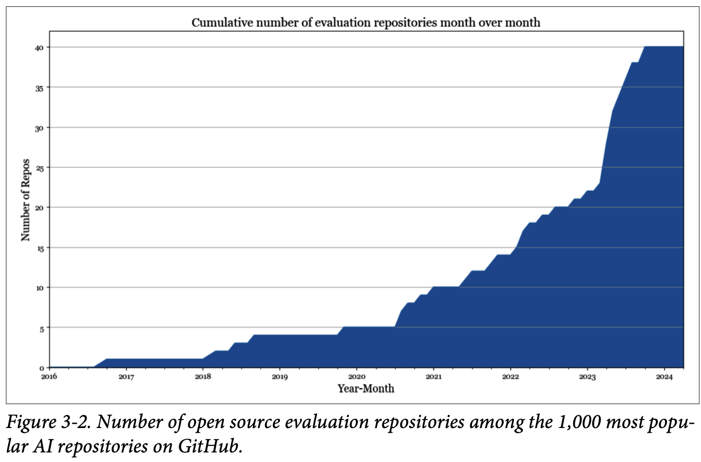
How to read this figure. It is cumulative: the height at any month is the total number of evaluation repos created up to then. It creeps from 0 (2016) to about 5 (2020), 10 (2021) and 20 (end of 2022), then shoots up during 2023 to about 40 and flattens into 2024. The steep 2023 wall is the post-ChatGPT rush.
Interest in evaluation is growing but still trails the rest of the AI engineering pipeline. Balduzzi et al. (DeepMind) noted that building evaluations gets little systematic attention compared to building algorithms: experiment results are almost always used to improve algorithms and rarely to improve evaluation. Anthropic asked policymakers to increase government funding and grants for developing new evaluation methods and for analysing how robust existing evaluations are.
Tools tell the same story: there are far fewer open-source tools for evaluation than for modeling and training, or for AI orchestration.
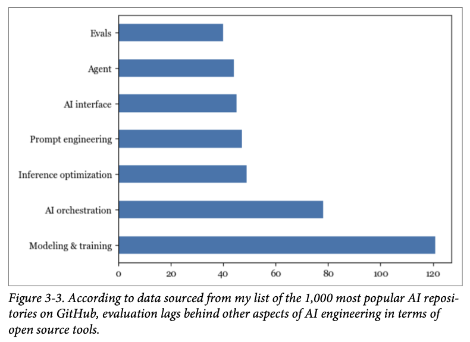
How to read this figure. Each bar counts open-source repos (among the top 1,000) in one category. Modeling & training leads with about 120, AI orchestration has about 78, then a cluster in the 40s: inference optimization (~49), prompt engineering (~47), AI interface (~45), agent (~44), and evals at the bottom (~40). Evaluation has the fewest tools of all the categories.
Too little investment means too little infrastructure, which makes systematic evaluation hard. When Huyen asked people how they evaluate their AI apps, many said they eyeballed results. Many keep a small set of go-to prompts, picked ad hoc from the curator's personal experience rather than from the application's needs. That may be fine to get a project started, but it is not enough for iterating on an application. The book pushes a systematic approach.
Grading a board exam. A Class 2 maths sheet can be checked by anyone with the answer key (close-ended). A Class 12 essay on the Green Revolution has a hundred good answers and needs an expert examiner who reads carefully (open-ended, smart). Now imagine students who keep scoring 100/100 on the old question paper, so the board keeps writing harder papers (saturation). Where it breaks: exam students don't hide how they studied; many models don't tell you what they were trained on (black box).
Every evaluation needs either a reference (what the right answer is) or a judge (someone able to tell good from bad). Open-endedness destroys the first, and growing intelligence makes the second expensive. Saturation happens because benchmarks are fixed while models keep improving. The industry spent its effort on models and orchestration first, so evaluation tooling arrived late.
"Why is evaluating LLMs harder than evaluating a classifier?" Say: "A classifier is close-ended: there's one expected label, so accuracy or F1 works. An LLM's output is open-ended with many valid answers, the model is often a black box, quality may need expert checking, and public benchmarks saturate quickly. So you combine methods: tests where possible, reference similarity, AI judges, and human review on samples."
Foundation models grew out of language models, and many still have a language model as their main component. For those, how well the language-model part performs correlates well with how the whole model performs on downstream applications (Liu et al., 2023). So a rough grasp of language-modeling metrics helps you understand downstream performance. Footnote 6: the correlation is strong but doesn't fully explain downstream performance; this is still being researched.
Language modeling is decades old (Chapter 1); Claude Shannon popularised it in his 1951 paper "Prediction and Entropy of Printed English". The metrics haven't changed much since. Most autoregressive language models (models that predict the next token from the previous ones) are trained with cross entropy or its relative perplexity. In papers and model reports you will also see bits-per-character (BPC) and bits-per-byte (BPB), both variations of cross entropy.
All four are closely related: know one and you can compute the other three, given the needed extra information (tokens per character, bits per character). They are called language-modeling metrics but work for any model that generates token sequences, including non-text tokens.
A language model stores statistical information about language: how likely each token is in a given context. After "I like drinking __", "tea" is far more likely than "charcoal". The more of this statistical structure a model captures, the better it predicts the next token. In ML terms, the model learns the distribution of its training data. The better it learns, the better it predicts what comes next in the training data, and the lower its training cross entropy.
As with any ML model, you care about performance on your production data, not just training data. Generally, the closer your data is to the model's training data, the better the model does on it.
The book warns this section is the most math-heavy in the book: if it's confusing, skip the math and focus on how to interpret the metrics. Even if you never train or finetune, these metrics help you choose models, and they show up in some evaluation and data deduplication techniques later in the book.
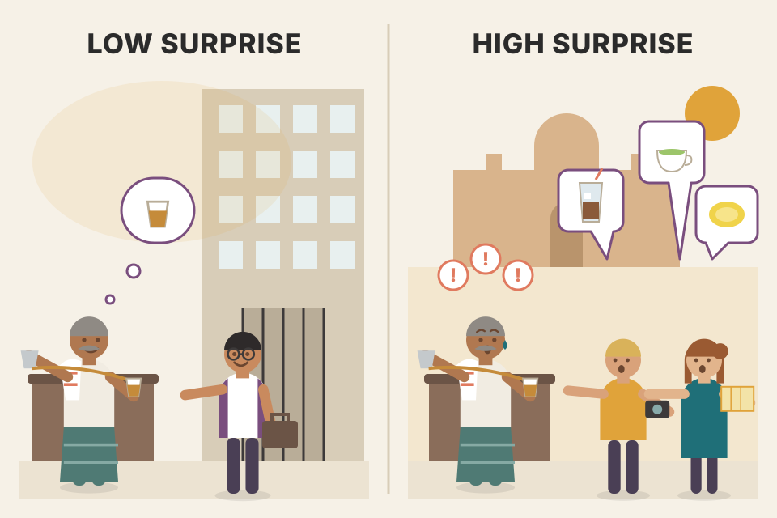
A chai-wala who has served the same office for years. When the accountant walks in, he already knows "cutting chai, less sugar". He is rarely surprised: low cross entropy on this office. Send him to a stall at a tourist spot and he'll be surprised much more often: same skill, unfamiliar data. Where it breaks: the chai-wala predicts one order; a language model gives a probability to every token in a vocabulary of tens of thousands.
Training an autoregressive model means showing it text and penalising it by how little probability it gave to the token that actually came next. That penalty, averaged over tokens, is cross entropy. Everything else in this part of the chapter is the same number in different units (bits vs nats), normalised differently (per token, per character, per byte), or exponentiated (perplexity).
"What loss do LLMs train on?" Say: "Next-token cross entropy: the average negative log-probability the model assigns to the actual next token. Perplexity is its exponential. BPC and BPB normalise the same quantity per character or per byte so models with different tokenizers can be compared."
Entropy measures how much information a token carries on average. Higher entropy means each token carries more information and needs more bits to represent. (Footnote 7: a token can be a character, a word or part of a word. When Shannon introduced entropy in 1951 his tokens were characters. In his definition, entropy is the average amount of information produced per letter of text, which equals the average number of binary digits (0/1) needed per letter if the language is translated into binary in the most efficient way.)
Imagine inventing a language to describe positions inside a square.
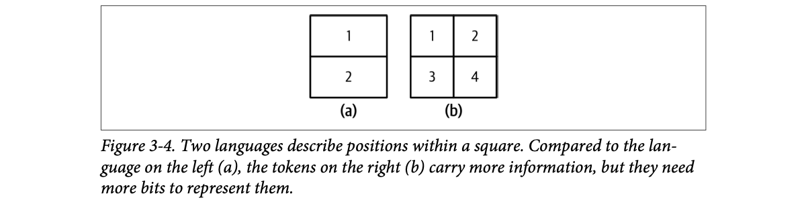
How to read this figure. Left, square (a) is cut into 2 halves, labelled 1 and 2: a token only says "top" or "bottom". Right, square (b) is cut into 4 quarters, labelled 1–4: a token pins the position down twice as precisely. More precise tokens = more information per token = more bits per token = higher entropy.
Intuitively, entropy measures how hard it is to predict what comes next in a language. Lower entropy (less information per token) means a more predictable language. Language (a) is easier to predict: you choose between 2 tokens instead of 4. The book's comparison: if you could perfectly predict what I will say next, what I say carries no new information.
Pick how many regions the square is cut into. With all regions equally likely, entropy = log₂(number of tokens). Then skew the probabilities: when one region is much more likely, the language becomes predictable and entropy drops below log₂ N. (Equal-chance case = the book's numbers; the skew slider is my addition.)
A weather bot in Chennai in May says "hot" 90% of the time and "rain" 10%. Entropy = −(0.9·log₂0.9 + 0.1·log₂0.1) ≈ 0.137 + 0.332 = 0.47 bits. A fair coin is 1 bit. The weather token carries less than half the information of a coin flip because you can mostly guess it. (Modelled numbers.)
A railway announcement at a small station where only one train stops each day: "the train is arriving" tells you almost nothing new (low entropy). At Howrah, "the train on platform 9 is the Rajdhani" is real news, because it could have been any of dozens of trains (high entropy). Where it breaks: entropy is about the average over many announcements, not one sentence.
A token with probability p needs about −log₂ p bits in the best possible code: common tokens get short codes, rare tokens long ones. Entropy is that code length averaged over how often each token appears. With N equally likely tokens every code is log₂ N bits, which is why 2 tokens → 1 bit and 4 → 2.
"What is entropy, intuitively?" Say: "The average surprise per token, in bits: about how many yes/no questions you'd need to identify the next token. Predictable data has low entropy; data where many tokens are equally likely has high entropy."
Training a language model on a dataset means getting it to learn that data's distribution, i.e. to predict what comes next in the data. A model's cross entropy on a dataset measures how hard it is for this model to predict what comes next in that dataset.
It depends on two things:
Notation: entropy and cross entropy both use the letter H. Let P be the true distribution of the training data and Q the distribution the model learned.
Cross entropy is not symmetric: H(P, Q), the cross entropy of Q with respect to P, is different from H(Q, P).
A language model is trained to minimise its cross entropy on the training data. If it learned the data perfectly, its cross entropy would equal the data's entropy exactly, and the KL divergence would be 0. So you can think of a model's cross entropy as its approximation of the entropy of its training data.
True next-token distribution after "I like drinking __" (invented numbers): tea 0.50, coffee 0.30, water 0.15, charcoal 0.05. Move the sliders to set the model's Q (re-normalised automatically). Cross entropy can never go below H(P); the gap is the KL divergence.
With P = (0.5, 0.3, 0.15, 0.05): H(P) = 0.5·1 + 0.3·1.737 + 0.15·2.737 + 0.05·4.322 ≈ 1.65 bits. A model that knows nothing (Q uniform, 0.25 each) pays log₂4 = 2 bits per token on average, so its KL divergence is about 0.35 bits. A perfect model pays 1.65 bits: no model can beat the data's own entropy. (Modelled numbers.)
A kirana shop owner stocks up based on what he thinks customers buy (Q). Real demand is P. Even with perfect beliefs there's unavoidable day-to-day randomness (H(P)). Every wrong belief ("people want more charcoal than tea") adds extra waste on top (KL). Total waste = randomness + wrong beliefs. Where it breaks: his waste is in rupees; cross entropy is in bits per token, and it's asymmetric: coding real demand with his beliefs is not the same as the other way round.
The model "pays" −log q(x) for each real token x. Averaged over tokens drawn from P, that's H(P, Q). If the model gives a real token tiny probability, the cost explodes (−log of a tiny number is huge), so training pushes probability mass towards tokens that actually appear. The minimum is reached when q = p, where the cost equals the data's entropy.
"What's the relationship between cross entropy and KL divergence?" Say: "Cross entropy H(P,Q) equals the entropy of the data H(P) plus KL(P‖Q). H(P) is fixed by the data, so minimising cross entropy is the same as minimising the KL divergence between the true distribution and the model. Neither is symmetric."
One unit for entropy and cross entropy is bits. If a language model's cross entropy is 6 bits, it needs 6 bits to represent each token.
But models tokenize differently: one may use whole words as tokens, another single characters. So bits per token can't be compared across models. Some people report bits-per-character (BPC) instead. If a model needs 6 bits per token and a token is 2 characters on average, BPC = 6 / 2 = 3.
BPC has its own snag: character encodings differ. In ASCII each character takes 7 bits; in UTF-8 a character can take anywhere from 8 to 32 bits. A more standard metric is bits-per-byte (BPB): the number of bits the model needs to represent one byte of the original training data. If BPC is 3 and each character is 7 bits (⅞ of a byte), then BPB = 3 / (⅞) = 3.43.
Cross entropy also tells you how well the model could compress text. A BPB of 3.43 means each original byte (8 bits) can be represented in 3.43 bits, so the model could compress the training text to less than half its original size.
Defaults reproduce the book's example (6 bits/token, 2 chars/token, ASCII 7-bit characters).
Hindi text in UTF-8 uses about 3 bytes (24 bits) per Devanagari character. Suppose a model needs 9 bits per token and a token is 1.5 characters. BPC = 6. Each character is 3 bytes, so BPB = 6 / 3 = 2. The same BPC of 6 on ASCII English would be BPB = 6 / (7/8) ≈ 6.9. This is why BPB, not BPC, is the fairer comparison across scripts and encodings.
Comparing mobile data plans: one says "₹2 per song", another "₹1 per minute", a third "₹10 per GB". You can't compare until you convert to the same unit. Bits per token is "per song" (songs differ in length), BPC is "per minute", BPB is "per GB": the most standard. Where it breaks: data plans charge you; BPB measures how well the model predicts, which is the same thing as how well it could compress.
Prediction and compression are the same problem: an ideal compressor built on a model spends −log₂ p bits on each token. So the model's cross entropy, divided by how many bytes the text took originally, is exactly the compression rate that model could achieve.
"Can you compare the perplexity of two LLMs with different tokenizers?" Say: "Not directly; per-token numbers depend on how text is split. Normalise to bits per character or, better, bits per byte of the original text, which also removes character-encoding differences."
Perplexity (often shortened to PPL) is the exponential of entropy and cross entropy. For a dataset with true distribution P:
If cross entropy measures how hard it is for a model to predict the next token, perplexity measures how uncertain it is when predicting: higher uncertainty means more plausible options for the next token.
Back to the square: a model that has learned the 4-position language (b) perfectly has cross entropy 2 bits. When it predicts a position it is choosing among 2² = 4 options, so its perplexity is 4.
So far the unit has been the bit; each bit can take 2 values, hence base 2. Popular ML frameworks such as TensorFlow and PyTorch use the nat (natural log, base e) as the unit. With nats, perplexity is e raised to the cross entropy. Footnote 8: one reason people prefer the natural log is that its math is easier; for example the derivative of ln(x) is simply 1/x.
Because of this bit/nat confusion, many people report perplexity rather than cross entropy: perplexity is the same number whichever unit you used to compute it (as long as you use the matching base).
A quiz where you must guess the next word. If you feel as unsure as someone picking blindly between 4 equally likely options, your perplexity is 4. Perplexity of 1 means you are certain; 50 means you might as well be rolling a 50-sided dice. Where it breaks: a real model isn't choosing uniformly; perplexity 4 is the size of an imaginary uniform choice that would be equally confusing.
Cross entropy H is an average of log-probabilities. Undoing the log (2^H or e^H) turns it back into a "number of choices" scale. Because 2^(H in bits) equals e^(H in nats), perplexity is unit-free, which is why people prefer to report it.
"What does a perplexity of 10 mean?" Say: "On average, the model is as uncertain about each next token as if it were choosing uniformly among 10 options. It's 2 to the power of cross entropy in bits, or e to the power of cross entropy in nats; lower is better on the same data and tokenizer."
Cross entropy, perplexity, BPC and BPB are all variations of one thing: how accurately a model predicts text. The better it predicts, the lower these numbers. The book uses perplexity as its default language-modeling metric: more uncertainty about what comes next in a dataset = higher perplexity.
What counts as a good perplexity depends on the data and on how exactly it was computed (for example, how many previous tokens the model can see). General rules:
<head> and you can expect a closing </head> nearby. So expect lower perplexity on HTML than on casual text.For reference, perplexities of 3 or lower are not unusual. If all tokens were equally likely, a perplexity of 3 would mean a 1-in-3 chance of guessing the next token right. With vocabularies of tens or hundreds of thousands of tokens, those odds are remarkable.
Besides guiding training, perplexity is useful across AI engineering. It is a good proxy for capability: if a model is bad at predicting the next token, it is likely bad downstream too. OpenAI's GPT-2 report shows larger (more powerful) models consistently get lower perplexity across datasets (Table 3-1). Sadly, as companies grow more secretive, many have stopped reporting perplexity.
| Model | LAMBADA (PPL) | LAMBADA (ACC) | CBT-CN (ACC) | CBT-NE (ACC) | WikiText2 (PPL) | PTB (PPL) | enwiki8 (BPB) | text8 (BPC) | WikiText103 (PPL) | 1BW (PPL) |
|---|---|---|---|---|---|---|---|---|---|---|
| SOTA (before GPT-2) | 99.8 | 59.23 | 85.7 | 82.3 | 39.14 | 46.54 | 0.99 | 1.08 | 18.3 | 21.8 |
| 117M | 35.13 | 45.99 | 87.65 | 83.4 | 29.41 | 65.85 | 1.16 | 1.17 | 37.50 | 75.20 |
| 345M | 15.60 | 55.48 | 92.35 | 87.1 | 22.76 | 47.33 | 1.01 | 1.06 | 26.37 | 55.72 |
| 762M | 10.87 | 60.12 | 93.45 | 88.0 | 19.93 | 40.31 | 0.97 | 1.02 | 22.05 | 44.575 |
| 1542M | 8.63 | 63.24 | 93.30 | 89.05 | 18.34 | 35.76 | 0.93 | 0.98 | 17.48 | 42.16 |
How to read this table. Go down each column: as GPT-2 grows from 117M to 1,542M parameters, every perplexity/BPB/BPC column falls (LAMBADA PPL 35.13 → 8.63) and accuracy columns rise. The largest model beats the previous state of the art (SOTA row) on most columns, though not on 1BW (One Billion Words) perplexity, where 42.16 is still worse than 21.8. (The book's header labels the last column "PBL"; it is perplexity.)
Perplexity may not be a great proxy for models that went through post-training such as SFT (supervised finetuning) and RLHF (reinforcement learning from human feedback) (footnote 9: see Chapter 2). Post-training teaches models to complete tasks; as a model gets better at tasks it may get worse at predicting next tokens, so perplexity typically rises after post-training. Some say post-training collapses entropy. Likewise quantization (lowering numerical precision to cut memory; footnote 10: covered in Chapter 7) can change perplexity in unexpected ways.
A model's perplexity on a text measures how hard that text is for the model to predict. It is lowest for texts the model saw and memorised during training. So perplexity can hint at whether a text was in the training data:
Perplexity is highest for unpredictable text: unusual ideas (the book's example is a dog that teaches quantum physics in his free time) or gibberish ("home cat go eye"). So perplexity can flag abnormal texts.
Perplexity and its relatives tell you about the underlying language model, a proxy for downstream performance. The rest of the chapter measures downstream performance directly.
A tabla teacher listening to a student. A practised composition from the syllabus flows without surprise (very low perplexity: probably memorised, maybe from the exam paper itself). Random banging shocks him every beat (very high perplexity: gibberish). A new but sensible composition is somewhere in between. Where it breaks: a teacher knows what's "good music"; perplexity only knows "expected or not", so an excellent but original answer can also score high perplexity.
Memorised text gets near-certain next-token probabilities, so its average log-probability is close to 0 and perplexity close to 1. Post-training shifts the model's probabilities towards "helpful answer" styles rather than the raw text distribution, so it gets worse at predicting raw text even as it becomes more useful. That's why the same metric that guides pre-training can mislead you about a chat model.
"Is perplexity a good way to compare chat models?" Say: "Only loosely. It's a decent capability proxy for base models on the same tokenizer and data, but post-training (SFT, RLHF) and quantization change perplexity in ways that don't track usefulness. Where perplexity shines is data work: flagging contamination (suspiciously low PPL on a benchmark), deduplication (only add high-PPL data) and spotting abnormal or garbage text."
A model's perplexity on a specific text measures how hard it is for that model to predict the text. For a language model X and a token sequence x₁, x₂, …, xₙ, X's perplexity on the sequence is the probability of the whole sequence raised to the power −1/n, which unrolls into a product of per-token probabilities:
Here P(xᵢ | x₁, …, xᵢ₋₁) is the probability the model gives to token xᵢ given all the tokens before it. To compute perplexity you need these probabilities, or their logs (logprobs). Unfortunately, not all commercial models expose logprobs (Chapter 2).
Each box is one token and the probability the model gave it (modelled numbers). Edit any probability, or load a preset. The calculator shows the average log-probability, cross entropy in bits and nats, and perplexity.
# sketch: perplexity from per-token logprobs (natural log), e.g. returned by an API with logprobs enabled
import math
def perplexity(token_logprobs): # [ln P(x1), ln P(x2 | x1), ...]
n = len(token_logprobs)
avg_nll = -sum(token_logprobs) / n # cross entropy in nats per token
return math.exp(avg_nll) # e ** H
perplexity([math.log(0.9), math.log(0.6), math.log(0.8), math.log(0.7)]) # ≈ 1.35The snippet is my own illustration of the book's formula. avg_nll is the average negative log-likelihood (cross entropy on this text, in nats); exponentiating it gives perplexity. Using log₂ and 2** would give the same result.
"I like drinking tea" with token probabilities 0.20, 0.30, 0.40, 0.60 (modelled). Product = 0.0144. Perplexity = (1/0.0144)^(1/4) = 69.4^(0.25) ≈ 2.89. Swap "tea" for "charcoal" with probability 0.001: product = 0.000024, perplexity = (41,667)^(0.25) ≈ 14.3. One surprising token raised the whole sentence's perplexity about five-fold.
A cricket commentator predicting each ball: "good length, outside off… defended". Most balls match his guess. One unexpected switch-hit makes him gasp. Perplexity is like his average gasp level over the over, computed as a geometric mean, so a single huge gasp moves it a lot. Where it breaks: the commentator guesses one outcome; the model gives a probability to every token, and only the probability of the token that actually happened counts.
By the chain rule, the probability of a sentence is the product of each token's probability given the previous tokens. Taking the n-th root averages it per token (a geometric mean), and inverting turns "probability" into "number of choices". That's why you need per-token probabilities: API-only models that hide logprobs can't give you perplexity.
"How would you compute perplexity of a text with an API model?" Say: "Request logprobs for the prompt tokens (if the API supports it), average the negative logprobs to get cross entropy in nats, and exponentiate. If the provider doesn't expose logprobs you can't; use an open model you host instead."
When evaluating performance it's important to separate exact from subjective evaluation.
The book covers two approaches that produce exact scores: functional correctness and similarity measurements against reference data.
This section is about open-ended responses (arbitrary text generation), not close-ended ones like classification. That's not because foundation models aren't used for close-ended tasks; many foundation-model systems have at least one classification component, typically for intent classification or scoring. It's because close-ended evaluation is already well understood.
Click each method to see which bucket the book puts it in.
A JEE multiple-choice paper is graded by an OMR machine: same sheet, same score, every time (exact). A UPSC essay paper is graded by examiners: two examiners can differ, and the same examiner on a tired evening may mark lower (subjective). A detailed marking scheme narrows the gap. Where it breaks: even "exact" methods can be wrong if the answer key (reference) is wrong, as plate 14 shows.
An exact method is a deterministic function of (output, test or reference). A subjective method adds a judge whose own behaviour is part of the score. That's why exact scores are reproducible and comparable across time, while subjective scores are only comparable if the judge stays fixed.
"What's the difference between exact and subjective evaluation?" Say: "Exact evaluation is deterministic: unit tests, exact match, BLEU or cosine similarity always give the same score for the same input. Subjective evaluation depends on the evaluator, human or AI judge, and its prompt. I prefer exact checks wherever the task allows, and use judges for qualities that can't be checked mechanically."
Functional correctness evaluation judges a system by whether it performs the intended function. Ask a model to build a website: does the site meet your requirements? Ask it to book a table at a certain restaurant: did the booking succeed?
It is the ultimate metric for any application, because it measures whether the app does what it's meant to do. But it isn't always straightforward to measure, and it often can't be automated easily.
Code generation is a task where functional correctness can be automated; in coding it's sometimes called execution accuracy. Ask the model to write a Python function gcd(num1, num2) (greatest common divisor; the book says "denominator"). Run the generated code in a Python interpreter: is it valid, and does it return the right answer for given inputs? For gcd(15, 20) the answer must be 5; if not, the function is wrong.
Long before AI wrote code, checking code automatically was standard software practice: unit tests run the code in different scenarios and check the outputs. It's how LeetCode and HackerRank validate submissions.
Popular code benchmarks use functional correctness: OpenAI's HumanEval and Google's MBPP (Mostly Basic Python Problems). So do text-to-SQL benchmarks (generating SQL from natural language): Spider (Yu et al., 2018), BIRD-SQL (Big Bench for Large-scale Database Grounded Text-to-SQL Evaluation; Li et al., 2023) and WikiSQL (Zhong et al., 2017).
A benchmark problem comes with test cases; each is a scenario to run plus the expected output. The book shows a HumanEval problem: a function that checks whether any two numbers in a list are closer together than a threshold, with a docstring and seven assert test cases. A shortened sketch of the same idea, in my own names:
def any_pair_closer_than(values: list[float], limit: float) -> bool:
"""True if some two numbers in `values` differ by less than `limit`."""
... # the model writes this body
def check(solution): # each assert = one test case
assert solution([1.0, 2.0, 3.9, 4.0, 5.0], 0.3) is True # 3.9 and 4.0 differ by 0.1
assert solution([1.0, 2.0, 3.9, 4.0, 5.0], 0.05) is False # no pair that close
assert solution([1.1, 2.2, 3.1], 1.0) is True # 2.2 and 3.1 differ by 0.9The model only sees the signature and docstring. The harness then calls check(model_function); the problem counts as solved only if every assert passes.
For each problem the model generates k code samples. A problem counts as solved if any of the k samples passes all of that problem's tests. The final score, pass@k, is the fraction of problems solved. With 10 problems and 5 solved at k = 3, pass@3 = 50%. More samples give more chances per problem, so in expectation pass@1 < pass@3 < pass@10.
20 problems; each has its own chance that one sample passes all tests (easy problems high, hard ones low; modelled). Raise k and resample: more problems turn green, so pass@k rises.
In practice, pass@k is usually estimated by generating n ≥ k samples per problem, counting c correct ones, and using the unbiased estimator 1 − C(n−c, k)/C(n, k) (from the HumanEval paper, Chen et al., 2021), which has lower variance than literally drawing k samples once.
Game bots can also be checked automatically: a Tetris bot is as good as its score. Generally, tasks with measurable objectives can use functional correctness: if AI schedules your workloads to save energy, measure the energy saved. Footnote 11: many complex tasks have measurable objectives, but AI isn't yet good enough to do them end to end, so it may do only part of the solution, and evaluating a part can be harder than evaluating the outcome. It's easier to judge a chess game's result (win/lose/draw) than to judge one move.
A text-to-SQL model for an orders database. Test case: "total revenue in March" with an expected result of ₹4,52,000. You run the generated SQL against a test database and compare the result set, not the SQL text. Two very different queries (one with a subquery, one with GROUP BY) can both be correct; a query that looks almost identical to the reference but uses < instead of <= on the date is wrong.
Testing an electrician's work: you don't read his wiring diagram, you flip every switch and check that every light and fan works (unit tests). If you let him try 3 times per room and count a room as done if any attempt worked, that's pass@3. Where it breaks: in real life you'd only get one installation per room; pass@k with large k flatters a model you will run once (pass@1) in production.
Functional correctness sidesteps the "many correct answers" problem: instead of comparing the output to a reference, you check its behaviour. It needs an executable environment and good test cases; weak tests let wrong code pass. pass@k rises with k because the chance that at least one of k independent tries succeeds is 1 − (1 − p)^k.
"How would you evaluate a code-generation or SQL agent?" Say: "By functional correctness: run the output in a sandbox against test cases and compare results, not text. Report pass@1 for what users will see; pass@k shows headroom if I add sampling plus a verifier. For an agent that books things, the functional check is whether the booking exists afterwards."
If functional correctness can't be automated for your task, a common approach is to compare AI outputs with reference data. Translating French to English? Compare the generated English with a correct English translation.
Each example in reference data has the form (input, reference responses). One input can have several references, e.g. several valid English translations. References are also called ground truths or canonical responses. Metrics that need references are reference-based; those that don't are reference-free.
This approach is limited by how much reference data you can make, and how fast. References are usually written by humans, and increasingly by AI.
Outputs more similar to the references are considered better. There are four ways to measure how similar two open-ended texts are:
AI evaluators are increasingly common and are the subject of the next section. This section covers the hand-designed metrics: exact match, lexical and semantic similarity. Exact match is binary (match or not); the other two are on a sliding scale (e.g. 0 to 1, or −1 to 1). Despite how easy and flexible AI judges are, hand-designed similarity measures are still widely used in industry because they are exact.
These techniques come back throughout the book.
Checking a student's English translation of a Hindi sentence against the teacher's answer key. Exact match: is it word for word the key? Lexical: how many of the key's words did they use? Semantic: does it mean the same thing? Evaluator: ask a teacher. Where it breaks: the answer key may have only one or two versions, and a perfectly good translation may match none of them.
All reference-based metrics assume the reference set covers the space of good answers. The more open-ended the task, the less true that is, which is why the chapter moves from exact match (needs the exact answer) to lexical (needs similar wording) to semantic (needs similar meaning) to judges (may need no reference at all).
"How do you build reference data for an LLM eval set?" Say: "Start from real inputs, have an LLM draft reference answers, then have humans review and fix them; reviewing is much cheaper than writing from scratch. Keep multiple references where answers vary, and remember reference-based metrics are only as good as the references."
A response is an exact match if it matches one of the references exactly. It works for tasks expecting short, exact answers: simple math, common-knowledge questions, trivia. The book's examples of such inputs:
Some variations tolerate formatting. One accepts any output that contains the reference. For "What's 2 + 3?" with reference "5", it accepts "The answer is 5" and "2 + 3 is 5".
But that can accept wrong answers. "What year was Anne Frank born?" Reference: 1929 (she was born June 12, 1929). If the model says "September 12, 1929", the year is in there, yet the answer is factually wrong.
Beyond simple tasks it rarely works. The French "Comment ça va?" can be "How are you?", "How is everything?" or "How are you doing?". If those three are the only references and the model says "How is it going?", it's marked wrong. The longer and more complex the source text, the more valid translations exist, and you can never list them all. For complex tasks, lexical and semantic similarity work better.
A UPI app checking a payment reference number: it must match exactly, character for character, and that's exactly right for that job. Now imagine checking a customer's complaint letter by matching it word for word against three "approved complaint templates". Absurd. Where it breaks: the "contains" shortcut is like accepting any reference number that contains the right digits somewhere: convenient, and sometimes accepts the wrong one.
Exact match treats text as an opaque string: equal or not. It has no idea of meaning, so any rephrasing is a miss (false negative), and lenient variants like "contains" or regex extraction trade false negatives for false positives. That's acceptable only when the answer space is tiny.
"When is exact match a good metric?" Say: "When answers are short and canonical: numbers, entity names, classification labels, extracted fields like an account balance. I normalise first (case, whitespace, number formats) and am careful with 'contains' matching because it accepts answers like 'September 12, 1929' when the question was the year. For free-form text I use semantic similarity or a judge."
Lexical similarity measures how much two texts overlap. First split each text into tokens. The simplest version counts tokens in common.
The book's example: reference "My cats scare the mice", and two generated responses (each word is a token):
So A counts as more similar to the reference.
One way to measure lexical similarity is approximate string matching, informally fuzzy matching. It counts how many edits turn one text into the other: the edit distance. The usual three edits:
Some fuzzy matchers also count a transposition (swapping two letters, "mats" → "mast") as one edit; others count it as two (one deletion plus one insertion). Example: "bad" is 1 edit from "bard" but 3 from "cash", so "bad" is more similar to "bard".
Another way is n-gram similarity: overlap of sequences of tokens instead of single tokens. A 1-gram (unigram) is one token; a 2-gram (bigram) is two. "My cats scare the mice" has four bigrams: "my cats", "cats scare", "scare the", "the mice". You measure what percentage of the reference's n-grams also appear in the generated response. Footnote 12: you may want preprocessing, depending on whether "cats"/"cat" or "will not"/"won't" should count as different tokens.
Unigram and bigram overlap = share of the reference's n-grams found in the response (lower-cased, punctuation removed). Edit distance is Levenshtein distance over characters (deletion, insertion, substitution = 1 each).
Common metrics are BLEU, ROUGE, METEOR++, TER and CIDEr; they differ in exactly how overlap is calculated. Before foundation models, BLEU, ROUGE and relatives were common, especially for translation. Since foundation models arrived, fewer benchmarks use lexical similarity. Examples that do: WMT, COCO Captions and GEMv2.
A good response can score low if no reference looks like it. On some benchmark examples, Adept found its model Fuyu scored poorly not because its outputs were wrong but because some correct answers were missing from the references.
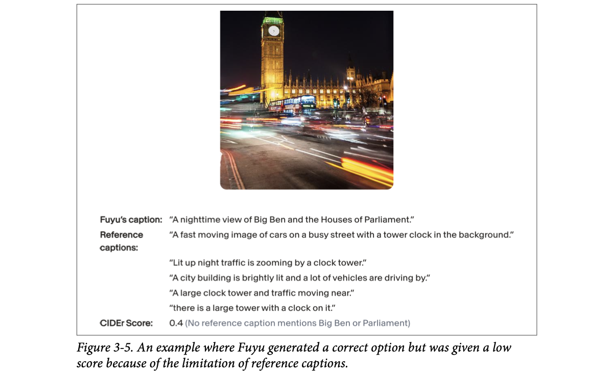
How to read this figure. The photo shows Big Ben and the Houses of Parliament at night with streaks of traffic light. Fuyu's caption correctly says it is a nighttime view of Big Ben and the Houses of Parliament. The five human reference captions only talk about a clock tower, a lit building and fast traffic. None mentions Big Ben or Parliament, so the n-gram metric CIDEr gives Fuyu only 0.4. The caption is more specific and still correct, but the metric punishes it for using words the references didn't.
The organisers of the WMT 2023 Metrics shared task (which studies metrics for machine translation) found many bad reference translations in their data. Low-quality references are one reason reference-free metrics were strong competitors to reference-based ones in how well they correlate with human judgment (Freitag et al., 2023).
On HumanEval, OpenAI found BLEU scores for incorrect and correct solutions were similar. So optimising for BLEU is not the same as optimising for functional correctness (Chen et al., 2021).
A school teacher who marks answers by counting keywords from the textbook answer. A student who writes the right idea in her own words loses marks; a student who copies keywords in a wrong sentence gains marks. And if the textbook answer itself has a mistake, everyone is graded against the mistake. Where it breaks: a teacher might notice; a metric never will.
Lexical metrics compare surface forms. Edit distance uses dynamic programming over characters; n-gram metrics count shared token sequences (BLEU is precision-oriented, ROUGE recall-oriented). Neither knows synonyms, word order effects on meaning, or facts, so they work best when outputs are expected to be close paraphrases of good references, as in translation.
"Would you use BLEU or ROUGE to evaluate a chatbot?" Say: "Mostly no. They reward word overlap with references, so a correct rephrasing scores low and a wrong answer with the right words can score high; OpenAI even found BLEU similar for correct and incorrect HumanEval code. I'd use them only for near-paraphrase tasks like translation, and otherwise prefer functional checks, semantic similarity or a judge."
Lexical similarity checks whether two texts look alike, not whether they mean the same. "What's up?" and "How are you?" share almost no words or letters but are close in meaning. The reverse also happens: "Let's eat, grandma" and "Let's eat grandma" look almost identical and mean completely different things.
Semantic similarity measures similarity in meaning. First turn each text into a numerical representation called an embedding. For example "the cat sits on a mat" might become [0.11, 0.02, 0.54]. That's why semantic similarity is also called embedding similarity. (How embeddings work is in plate 16; for now assume you can turn text into embeddings.)
The similarity between two embeddings can be computed with metrics such as cosine similarity. Identical embeddings score 1; opposite embeddings score −1. Text is used as the example, but semantic similarity works for embeddings of any modality, including images and audio. For text it is sometimes called semantic textual similarity.
The book places semantic similarity under exact evaluation, but it can be seen as subjective, because different embedding algorithms produce different embeddings. Once you have two embeddings, though, their similarity is computed exactly.
Let A be the embedding of the generated response and B the embedding of a reference:
Metrics for semantic textual similarity include BERTScore (embeddings from BERT) and MoverScore (embeddings from a mixture of algorithms).
Semantic similarity doesn't need as comprehensive a reference set as lexical similarity. But it is only as reliable as the embedding algorithm: two texts with the same meaning can still score low if the embeddings are bad. And the embedding model may need nontrivial compute and time to run.
The "semantic" score uses a tiny hand-made embedding: each known word has a vector over 6 meaning-dimensions (greeting, wellbeing, eating, family, animal, conflict) and a sentence is the average of its word vectors. Real embedding models learn hundreds to thousands of dimensions from data. Words the toy doesn't know are ignored.
Two people giving directions in Bengaluru: "take the left after Forum mall" and "turn towards Koramangala at the big mall". Different words, same route: semantic similarity is high, lexical is low. Embeddings are like plotting each instruction as a point on a map of meanings and measuring the angle between them. Where it breaks: if your "map maker" (embedding model) is poor, it will put the two instructions far apart even though they mean the same.
An embedding model is trained so that texts used in similar ways land near each other in vector space. Cosine similarity ignores vector length and looks only at direction, so it measures "pointing the same way in meaning space". It inherits all the embedding model's blind spots (negation, punctuation, domain jargon) and costs a forward pass per text.
"Lexical vs semantic similarity: when would each fail?" Say: "Lexical fails on paraphrases ('What's up?' vs 'How are you?') and is fooled by look-alikes ('Let's eat, grandma' vs 'Let's eat grandma'). Semantic similarity with embeddings and cosine fixes paraphrases, but its quality depends entirely on the embedding model, it costs compute, and it can still miss small but critical differences like negations or numbers."
Computers work with numbers, so a model must turn its input into numbers. An embedding is a numerical representation that tries to capture the meaning of the original data. An embedding is a vector: "the cat sits on a mat" → [0.11, 0.02, 0.54] (a tiny example). Real embedding vectors usually have between 100 and 10,000 elements. Footnote 13: 10,000 dimensions sounds like a lot, but it's far fewer than the raw data's dimensionality, so an embedding is a lower-dimensional representation of complex data.
Models trained specifically to produce embeddings include the open-source BERT, CLIP (Contrastive Language–Image Pre-training) and Sentence Transformers; there are also proprietary embedding APIs. Footnote 14: some models produce word embeddings rather than document embeddings, such as word2vec (Mikolov et al., 2013) and GloVe (Pennington et al., Stanford NLP, 2014).
| Model | Embedding size |
|---|---|
| Google's BERT | BERT base: 768 · BERT large: 1024 |
| OpenAI's CLIP | Image: 512 · Text: 512 |
| OpenAI Embeddings API | text-embedding-3-small: 1536 · text-embedding-3-large: 3072 |
| Cohere's Embed v3 | embed-english-v3.0: 1024 · embed-english-light-3.0: 384 |
Because models first turn inputs into vectors, many ML models, GPTs and Llamas included, have an embedding step (the embedding layer of a transformer, shown in Chapter 2). With access to a model's intermediate layers you can extract embeddings from it, but they may be worse than those from specialised embedding models.
[0.11, 0.02, 0.54] looks nothing like "the cat sits on a mat", so how do you check it captured the meaning? At a high level, an embedding algorithm is good if more similar texts get closer embeddings (by cosine similarity or related metrics). "The cat sits on a mat" should be closer to "the dog plays on the grass" than to "AI research is super fun".
You can also judge embeddings by their usefulness for your task: classification, topic modeling, recommender systems, RAG (retrieval-augmented generation). MTEB, the Massive Text Embedding Benchmark (Muennighoff et al., 2023), measures embedding quality across many tasks.
Any data can be embedded: e-commerce companies Criteo and Coveo embed products; Pinterest embeds images, graphs, queries and even users.
A new frontier is joint embeddings across modalities. CLIP (Radford et al., 2021) was one of the first major models to map text and images into one shared embedding space. ULIP (unified representation of language, images and point clouds; Xue et al., 2022) adds 3D point clouds. ImageBind (Girdhar et al., 2023) learns a joint embedding across six modalities, including text, images and audio.
CLIP is trained on (image, text) pairs, where the text is a caption or comment for the image. For each pair, a text encoder turns the text into a text embedding and an image encoder turns the image into an image embedding. Both are then projected into a joint embedding space. Training pushes each image's embedding close to its own text's embedding in that space.
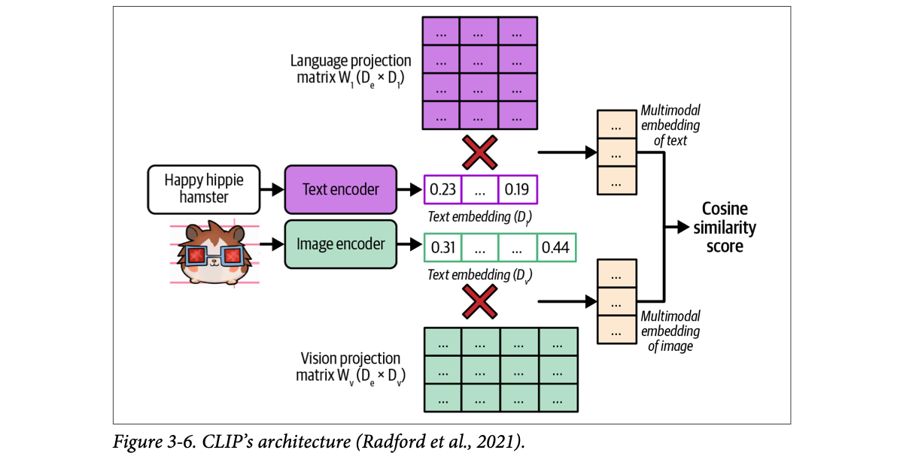
How to read this figure. Two lanes. Top lane: the text "Happy hippie hamster" → text encoder → a text embedding of size Dt (e.g. 0.23 … 0.19) → multiplied by the purple language projection matrix Wt (size De × Dt) → the multimodal embedding of text (size De). Bottom lane: the hamster picture → image encoder → image embedding of size Dv (labelled "text embedding" in the figure, but it is the image's) → multiplied by the green vision projection matrix Wv (De × Dv) → the multimodal embedding of image. Both end up the same size De, so a cosine similarity score can compare them. Training raises this score for matching pairs.
A joint space that holds several modalities is a multimodal embedding space. In a text–image space, a photo of a man fishing should be closer to the text "a fisherman" than to "fashion show". This lets you compare and combine modalities, e.g. text-based image search: given a text, find the closest images.
Aadhaar for meaning. Every person (text, image, product, user) gets a number-code, and people who are "alike" get codes that are close. CLIP is like issuing the same kind of code to a person's photo and to a written description of them, so you can search photos by describing someone. Where it breaks: Aadhaar numbers are arbitrary IDs; embedding coordinates are learned so that distance itself carries meaning.
CLIP uses a contrastive objective: in a batch of N image–caption pairs it computes all N×N cosine similarities and trains so each image's true caption has the highest score in its row and column. The projection matrices exist because the two encoders output different sizes (Dt, Dv); projecting both into De makes them directly comparable.
"How would you pick an embedding model for RAG?" Say: "Check MTEB for the retrieval tasks closest to mine, then test the top few on my own queries, measuring retrieval quality. Trade off dimension size (e.g. 384 vs 1536 vs 3072) against storage, latency and cost. Specialised embedding models usually beat embeddings pulled from a generative model's hidden layers."
Open-ended responses are so hard to evaluate that many teams fall back on human evaluation. AI has automated many hard tasks; can it automate evaluation too? Using AI to evaluate AI is called AI as a judge or LLM as a judge, and the model doing the evaluating is an AI judge. Footnote 15: not to be confused with AI acting as a judge in a court of law.
The idea is old (footnote 16: in 2017 Huyen presented MEWR, a Machine translation Evaluation metric Without Reference text, at a NeurIPS workshop; it used stronger language models to evaluate translations automatically, but she didn't pursue it), but it only became practical around 2020, when models like GPT-3 became capable enough.
As of writing, AI as a judge is one of the most common, if not the most common, ways to evaluate AI models in production. Most AI-evaluation startup demos Huyen saw in 2023 and 2024 used it in some way. LangChain's State of AI 2023 report found 58% of evaluations on their platform were done by AI judges. It is also an active research area.
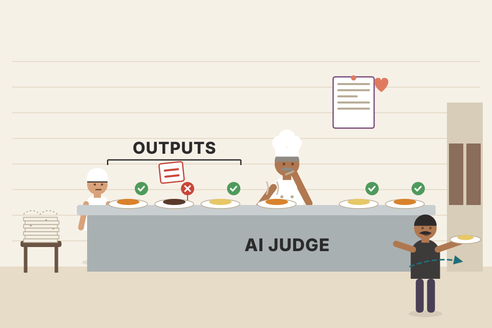
A senior chef tasting every dish before it leaves the kitchen instead of asking each customer to fill a feedback form. Faster and cheaper than customer surveys, and the chef can say why a dish failed. Where it breaks: the chef has tastes of his own, may favour his own recipes, and may taste differently on a busy night: the biases and inconsistency of plates 20–23.
A capable LLM has absorbed a huge amount of human writing, including reviews, critiques and grading. Prompted with a task, criteria and a scoring scale, it can produce a judgment and an explanation. The judgment is a generation like any other, so it depends on the model, the prompt and sampling.
"What is LLM-as-a-judge?" Say: "Using a model, given a rubric prompt, to score or compare other models' outputs. It's now the most common automatic method for open-ended quality in production, because it needs no references and scales cheaply, but it's subjective: the score depends on the judge model and prompt."
"But you can't always trust people's opinions." True, and you can't always trust an AI's either. But each AI model is an aggregation of the masses, so it can make judgments representative of the masses. With the right prompt for the right model, you can get reasonably good judgments on many topics.
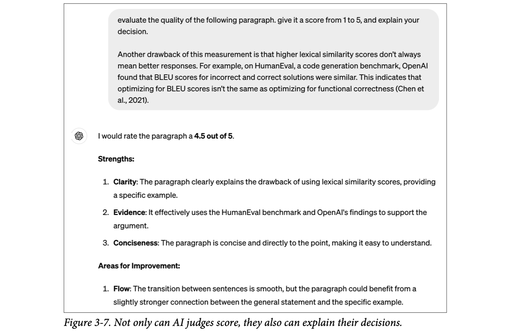
How to read this figure. The user pastes a paragraph (from this very chapter, about BLEU being similar for correct and incorrect HumanEval code) and asks GPT-4 for a 1–5 score with reasons. The model gives 4.5 out of 5, then explains: strengths are clarity, evidence (it cites HumanEval and OpenAI's finding) and conciseness; the area to improve is flow between the general claim and the example. The point: you get a score and a rationale you can audit. (Note the judge used 4.5 on a 1–5 scale: judges don't always respect the scale you set.)
This flexibility makes AI judges useful for a wide range of applications; for some, it's the only automatic option. Even when AI judgments are worse than human ones, they may be good enough to guide development and give enough confidence to get a project off the ground.
A cricket third umpire with replays: faster and more consistent than asking the crowd, and the decision comes with reasons on the big screen. Studies show this umpire agrees with expert panels as often as experts agree with each other. Where it breaks: the third umpire follows fixed rules; an AI judge follows whatever rubric you wrote, and a vague rubric gives vague verdicts.
Human raters disagree a lot on open-ended quality, so "agreement with humans" has a ceiling well below 100%. A strong model trained on vast human text can land near the average human view, which is why GPT-4 can agree with humans as often as humans agree with each other.
"Can you trust an LLM judge?" Say: "Partly. Studies like MT-Bench show GPT-4 agreeing with humans 85% of the time, more than humans agree with each other (81%). So it's good enough to guide iteration, especially with a clear rubric and explanations to audit. But I validate it against a human-labelled sample first, and pair it with exact checks."
You can use AI to judge a response by itself, against reference data, or against another response. The book gives a naive prompt for each; in short:
A general-purpose judge can evaluate any criterion. A roleplay chatbot might ask "Does this response sound like something Gandalf would say?"; a product-photo generator might ask "From 1 to 5, how trustworthy does the product in this image look?".
| AI tool | Built-in criteria |
|---|---|
| Azure AI Studio | Groundedness, relevance, coherence, fluency, similarity |
| MLflow.metrics | Faithfulness, relevance |
| LangChain Criteria Evaluation | Conciseness, relevance, correctness, coherence, harmfulness, maliciousness, helpfulness, controversiality, misogyny, insensitivity, criminality |
| Ragas | Faithfulness, answer relevance |
Remember: these criteria are not standardised. Azure AI Studio's "relevance" may score very differently from MLflow's. Scores depend on the judge's underlying model and prompt.
Prompting a judge is like prompting any AI app. The prompt should clearly explain:
Language models are generally better with text than numbers; AI judges reportedly work better with classification than numerical scores. For numbers, discrete beats continuous, and the wider the discrete range, the worse the model seems to do; typical scales are 1 to 5. Prompts with examples work better: for a 1–5 scale, show what a 1, 2, 3, 4 and 5 look like and, if possible, why. (Prompting best practices: Chapter 5.)
The book shows part of Azure AI Studio's relevance prompt. In summary, it: states the task (score relevance between a generated answer and the question, based on the ground truth, on 1–5, with a reason); states the main focus (does the answer contain enough information to address the question per the ground truth); says an answer that contradicts the ground truth gets 1–2; and gives an example: question "Is the sky blue?", ground truth "Yes, the sky is blue.", generated "No, the sky is not blue." → contradiction → low score of 1–2, with the reason citing the contradiction.
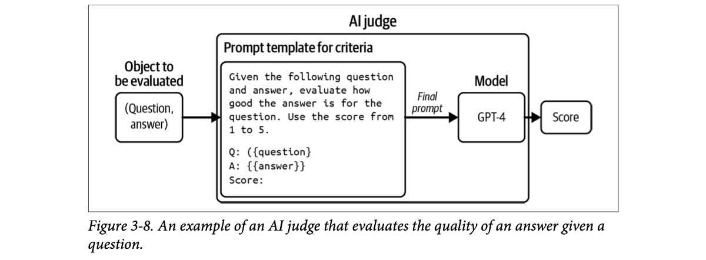
How to read this figure. Left: the object to be evaluated, a (question, answer) pair. It is slotted into a prompt template for the criterion (asking for a 1–5 score with placeholders for the question and answer). The filled-in final prompt goes to the model (GPT-4), which outputs a score. The big box around template + model is labelled AI judge: the judge is the combination, not the model alone.
So an AI judge is a system: a model plus a prompt. Change the model, the prompt, or the model's sampling parameters, and you have a different judge.
Choose a mode, criterion and scoring system; tick whether to add examples. The prompt preview updates, along with the book's guidance on that choice.
Asking a relative to "rate this rishta out of 10" vs giving them a checklist: education, job, family, distance, with examples of what counts as good. The checklist gets you more consistent and useful answers; a 1–10 scale with no anchors gets you "7, I guess". Where it breaks: a relative will still bring personal biases; so will a judge model.
"How would you design an LLM judge?" Say: "Spell out the task, the criterion in detail, and the scoring system. Prefer classification or a small discrete scale like 1–5 over continuous scores, and include an example for each score with its reason. Ask for a rationale. Then I version the judge as model + prompt + sampling settings, because changing any of them makes a different judge."
Despite its advantages, many teams hesitate to use AI judges:
So some teams treat AI judges as a fallback for when nothing else works, especially in production. The book walks through the limitations one by one: inconsistency, criteria ambiguity, cost and latency, and biases.
A trustworthy evaluation method should give consistent results. AI judges, like all AI apps, are probabilistic. The same judge on the same input can give different scores with a different prompt, and even with the same prompt run twice. That makes results hard to reproduce or trust.
You can make a judge more consistent. Chapter 2 covers sampling variables (e.g. temperature). Zheng et al. (2023) showed adding evaluation examples to the prompt raised GPT-4's consistency from 65% to 77.5%. But:
One answer whose "true" quality is 4/5. Each run, the judge's score wobbles. Temperature and examples change how much; "consistency" = share of runs giving the most common score. Notice that examples help consistency but cost 4× tokens, and a biased judge can be perfectly consistent and wrong.
Asking the same examiner to re-mark the same answer sheet on Monday and on Friday and getting 14/20 and 17/20. A marking scheme with sample answers (examples) narrows the gap, but if the scheme itself has a mistake, he'll now be consistently wrong. Where it breaks: a human examiner's mood drifts slowly; an LLM judge's variation comes from sampling, which you can partly control.
A judge's score is a token sampled from a distribution over "1"…"5". With temperature above zero, different runs pick different tokens; small prompt changes shift the whole distribution. Examples sharpen the distribution (more consistent) but can't fix a distribution centred on the wrong value (consistent but inaccurate).
"Your LLM-judge scores are noisy. What do you do?" Say: "Lower temperature, add scored examples to the rubric, and possibly run the judge several times and take the majority. Then check accuracy separately against a human-labelled set, because a consistent judge can still be consistently wrong. Budget for it: Zheng et al. saw consistency go from 65% to 77.5% with examples, but GPT-4 costs quadrupled."
Unlike many hand-designed metrics, AI-judge metrics aren't standardised, which makes them easy to misread and misuse. As of writing, the open-source tools MLflow, Ragas and LlamaIndex all have a built-in criterion called faithfulness (how faithful an output is to the given context), but their instructions and scoring systems all differ.
| Tool | What the default prompt asks (paraphrased) | Scoring system |
|---|---|---|
| MLflow | Ignore the input; judge only the output against the provided context: how much of the output is factually consistent with the context. Each score level is described, starting with "1 = none of the output's claims can be inferred from the context". | 1–5 |
| Ragas | Split into a series of statements; for each, return 1 if it can be verified from the context and 0 if not. | 0 and 1 |
| LlamaIndex | Say whether a piece of information is supported by the context, answering YES or NO. Answer YES if any part of the context supports it, even if most of the context is unrelated. Includes an example (apple pie being double-crusted, supported by a context passage). | YES / NO |
These scores aren't comparable. For one (context, answer) pair, if MLflow says 3, Ragas says 1 and LlamaIndex says NO, which do you use?
Context: "The Rajdhani leaves New Delhi at 16:55 and reaches Mumbai Central at 08:35. It has a pantry car." Pick an answer; see how each tool's scoring system would plausibly report it.
An application changes over time, but ideally the way you evaluate it stays fixed, so metrics can track the app's changes. AI judges are AI apps themselves, so they can change too.
Last month your app's coherence score was 90%, this month 92%. Did coherence improve? You can't say unless you know the judges were exactly the same. Maybe this month's judge prompt is different: someone switched to a slightly better prompt, or a coworker fixed a typo, and the judge became more lenient.
It gets worse when the app and the judge are owned by different teams. The judge team may change judges without telling the app team, who then credit (or blame) the app for changes that came from the judge.
Evaluation methods take time to standardise. Huyen hopes that as the field matures and more guardrails appear, AI judges will become more standardised and reliable.
Three restaurant apps rating "hygiene": one uses 1–5 stars, one a pass/fail sticker, one a YES/NO "FSSAI-checked" tag. All say "hygiene", none are comparable. And if one app quietly changes its rating rules, every restaurant's rating moves overnight without any kitchen changing. Where it breaks: FSSAI at least publishes its rules; with AI judges you have to insist on seeing the prompt.
A criterion name is just a label; the actual metric is defined by the judge's prompt, scale and model. Any edit to these redefines the metric. Without versioning the judge, a time series of scores mixes two things: changes in the app and changes in the ruler.
"Your eval dashboard shows faithfulness up 5% after a deploy. Do you believe it?" Say: "Only after checking the judge didn't change. I version judges as model + prompt + sampling parameters and pin them; if the judge changes, I re-score a frozen baseline with both versions. I also never compare 'faithfulness' across tools like MLflow, Ragas and LlamaIndex: one is 1–5, one 0/1 per statement, one YES/NO."
AI judges can be used both during experimentation and in production. Many teams use them as guardrails in production: only show users responses the judge deems good.
Strong judges are expensive. Use GPT-4 to both generate and evaluate and you make twice as many GPT-4 calls, roughly doubling API costs. Evaluate three criteria (say overall quality, factual consistency and toxicity) with three judge prompts and you have four times the calls. Footnote 17: in some cases evaluation takes up most of the budget, more than generating the responses.
Ways to cut cost:
All things considered, AI judges are still much cheaper than human evaluators.
Latency: if you evaluate a response before returning it, you trade lower risk for higher latency. For apps with strict latency requirements that can be a non-starter.
A sweet shop where every box of mithai is checked by the owner before handing it over: fewer complaints, but the queue grows and the owner's time is costly. Checking every tenth box (spot-checking) keeps the queue moving but some bad boxes slip through. Where it breaks: in a sweet shop, the checker can be faster than the cook; a strong AI judge is often as slow and costly as the generator.
Each judged criterion is another full LLM call with the whole response in its prompt (often plus context and examples), so cost scales with (1 + number of criteria) × share evaluated. Inline judging puts that call on the critical path, adding its full latency to time-to-response; offline or async judging removes the latency but can't block a bad answer.
"How do you run LLM judges in production without blowing the budget or latency?" Say: "Use a small or specialised judge for inline guardrails where latency matters, and run the expensive strong judge asynchronously on a sample, say 1–5% of traffic, for monitoring. Merge criteria into one judge call where possible. For a realtime voice agent, inline judging on every turn usually isn't affordable in latency, so I'd judge async and alert."
Assumes $0.01 per generation call and the same price per judge call for the strong judge (modelled). With 1 criterion at 100% you get the book's 2×; with 3 criteria, 4×.
Human evaluators have biases, and so do AI judges; different judges have different ones. Knowing your judge's biases helps you interpret its scores and even mitigate the bias.
Huyen believes adoption of AI judges will keep growing despite these limits, but judges should be supplemented with exact evaluation and/or human evaluation.
Two answers of equal quality. The judge picks the first-shown answer with probability set by the slider. Run each pair in both orders: a fair judge gives consistent winners; a position-biased judge flips with the order. Count only "consistent" verdicts, or call the rest a tie.
A short, correct answer (~50 words) vs a long answer with a factual error. Make the long one longer and watch a verbosity-biased judge's preference.
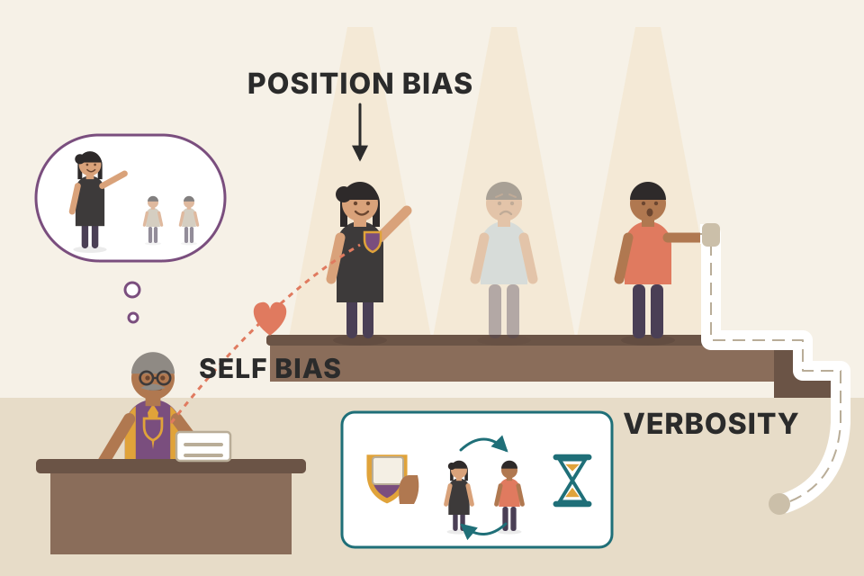
A debate competition judge who (1) prefers speakers from his own college (self-bias), (2) remembers the first speaker best (position bias) and (3) gives marks for speaking longer (verbosity). Fixes: hide college names, run each pairing twice with speakers swapped, and give a strict word limit. Where it breaks: you can't hide "which college" from a model judging its own style; self-bias comes from its own probabilities.
Self-bias: the judge's likelihood of a text is high for texts it would itself generate, and that leaks into "quality". Position bias: attention and training data patterns make the first option more salient. Verbosity: longer answers look more thorough, and post-training data often rewarded detail. Each is a systematic shift, so it doesn't average away; you have to design around it.
"What biases do LLM judges have and how do you handle them?" Say: "Self-bias (GPT-4 +10% win rate for itself, Claude-v1 +25% in Zheng et al.), so don't let a model judge its own outputs against competitors. First-position bias, so evaluate both orderings and only count consistent wins. Verbosity bias, so control or normalise length and state in the rubric that length isn't quality. And use exact checks and human spot-checks as a backstop."
The judge can be stronger, weaker or the same as the model being judged. Each has pros and cons.
Intuitive: shouldn't the examiner know more than the student? Stronger models make better judgments and can help weaker ones improve by guiding them to better responses.
If you have the stronger model, why generate with the weaker one? Cost and latency. You may not afford the strong model for every response, so use it to evaluate a subset, e.g. a cheap in-house model generates and GPT-4 evaluates 1% of responses. Or the strong model is too slow: a fast model answers while the strong one evaluates in the background; if it thinks a response is bad, you take remedial action, such as replacing it with the strong model's response. The opposite pattern is also common: a strong model generates while a weak model evaluates in the background.
Two problems with "always use a stronger judge": the strongest model has no eligible judge, and you need some other method to decide which model is strongest.
A model judging itself, self-evaluation or self-critique, sounds like cheating, especially given self-bias. But it's great for sanity checks: if a model thinks its own answer is wrong, the model may not be reliable. And asking a model to evaluate itself can nudge it to revise and improve its answer (Press et al., 2022; Gou et al., 2023; Valmeekam et al., 2023). Footnote 20: also called self-critique or self-ask. The book's example: asked "What's 10+3?", the model first answers 30; asked whether that's correct, it says no, the correct answer is 13.
An open question. Some argue judging is easier than generating: anyone can say whether a song is good; not everyone can write one. So weaker models should be able to judge stronger ones. Zheng et al. (2023) found stronger models correlate better with human preference, so people pick the strongest judge they can afford, but that experiment covered only general-purpose judges.
A direction Huyen is excited about: specialised judges trained to make specific judgments, with specific criteria and scoring systems. A small specialised judge can be more reliable than a larger general one for its specific job. Three examples:
| Type | Input → output | Examples from the book |
|---|---|---|
| Reward model | (prompt, response) → how good the response is | Used in RLHF for years. Cappy (Google, 2023): a lightweight 360M-parameter scorer that outputs 0–1 for how correct the response is. |
| Reference-based judge | (response, reference(s)) → similarity or quality score | BLEURT (Sellam et al., 2020): (candidate, reference) → similarity score. Footnote 21: its range is confusingly about −2.5 to 1.0, an example of criteria ambiguity. Prometheus (Kim et al., 2023): (prompt, response, reference, scoring rubric) → quality 1–5, assuming the reference scores 5. |
| Preference model | (prompt, response 1, response 2) → which is better / preferred by users | PandaLM (Wang et al., 2023), JudgeLM (Zhu et al., 2023). Preference data is essential for alignment and expensive to get, so a good human-preference predictor makes evaluation easier and models safer. |
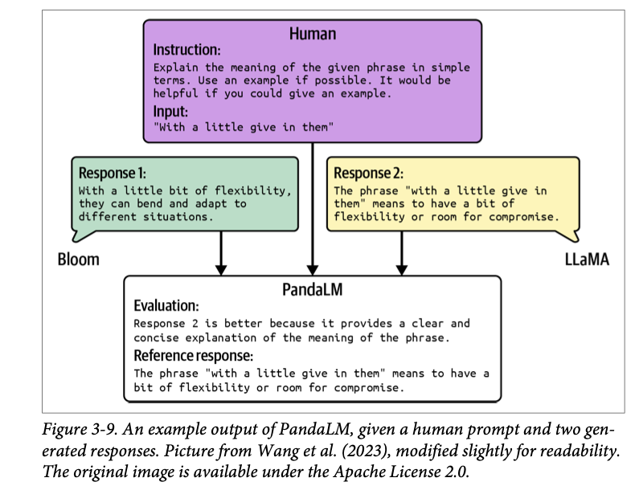
How to read this figure. The top box is the human instruction: explain the phrase "with a little give in them" simply, with an example if possible. Two models answer: Bloom (green, left) gives a vague line about bending and adapting; LLaMA (yellow, right) says the phrase means having some flexibility or room for compromise. All three feed into PandaLM (bottom), which outputs an evaluation (response 2 is better because it is a clear and concise explanation of the phrase) and a reference response of its own. So the preference model gives a verdict and its rationale.
Despite its limits, AI as a judge is versatile and powerful, and cheaper judges make it more useful still. Many of Huyen's colleagues who were sceptical now rely on it more in production.
A hospital: junior doctors see patients (cheap, fast model) and a senior consultant reviews a sample of cases in the evening (strong judge on 1%), stepping in when something looks wrong. A specialised judge is like a radiologist who only reads X-rays: not a general doctor, but better at that one call. Where it breaks: the head of the hospital has no one senior to review her: the strongest model has no eligible judge.
Discriminating is often easier than generating: checking that an answer satisfies a rubric needs less capability than producing it. Training a small model on one judgment type (reward, reference comparison, preference) lets it learn that narrow skill well, which is why a 360M-parameter Cappy can be useful next to giant general models.
"Which model would you use as a judge?" Say: "It depends on cost and latency. For background monitoring, a stronger model on a small sample. For inline guardrails, a small specialised judge such as a reward or preference model. Self-critique is fine as a sanity check and to trigger a revision, but not for comparing the model against competitors because of self-bias."
Often you evaluate models not for their scores but to find which is best for you: you want a ranking. Two ways:
For subjective quality, comparing is usually easier than scoring: it's easier to say which of two songs is better than to give each a concrete score.
In AI, comparative evaluation was first used by Anthropic in 2021 to rank models. It also powers LMSYS's Chatbot Arena, which ranks models from community pairwise comparisons. Many providers use it in production; ChatGPT sometimes asks users to pick between two outputs. These may come from different models or the same model with different sampling variables.
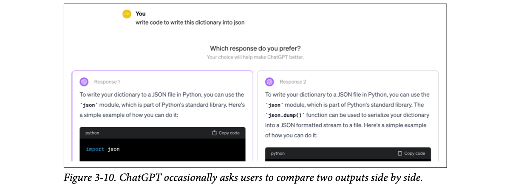
How to read this figure. The user asked for code to write a dictionary to JSON. Instead of one answer, ChatGPT shows two (Response 1 and Response 2), both using Python's json module but worded differently, and asks which you prefer, saying your choice will help improve ChatGPT. Your click is one comparison data point.
For each request, two or more models respond and an evaluator (human or AI) picks the winner. Many developers allow ties, so a winner isn't picked at random when both are equally good or bad.
Very important: not all questions should be answered by preference; many should be answered by correctness. If asked whether cell-phone radiation is linked to brain tumours and shown "Yes" and "No" to choose from, preference voting can produce wrong signals which, if used for training, can cause misaligned behaviour.
It also frustrates users: you asked a math question because you didn't know the answer; being shown two different answers and asked to choose is unhelpful. One challenge is deciding which questions preference voting can settle. It works only if voters know the subject: generally where AI is an intern or assistant speeding up tasks users know how to do, not where users ask for things they can't do themselves.
Comparative evaluation is not A/B testing. In A/B testing a user sees output from one candidate at a time; in comparative evaluation a user sees outputs from several models at once.
Each comparison is a match; the process yields a history of matches:
| Match # | Model A | Model B | Winner |
|---|---|---|---|
| 1 | Model 1 | Model 2 | Model 1 |
| 2 | Model 3 | Model 10 | Model 10 |
| 3 | Model 7 | Model 4 | Model 4 |
| … |
The probability that A is preferred over B is A's win rate over B: the share of A-vs-B matches A won. With two models, ranking is easy: more wins ranks higher. With more models it gets hard. Table 3-6 gives win rates among five models, and the ranking isn't obvious:
| Pair # | Model A | Model B | # matches | A ≫ B |
|---|---|---|---|---|
| 1 | Model 1 | Model 2 | 1000 | 90% |
| 2 | Model 1 | Model 3 | 1000 | 40% |
| 3 | Model 1 | Model 4 | 1000 | 15% |
| 4 | Model 1 | Model 5 | 1000 | 10% |
| 5 | Model 2 | Model 3 | 1000 | 60% |
| 6 | Model 2 | Model 4 | 1000 | 80% |
| 7 | Model 2 | Model 5 | 1000 | 80% |
| 8 | Model 3 | Model 4 | 1000 | 70% |
| 9 | Model 3 | Model 5 | 1000 | 10% |
| 10 | Model 4 | Model 5 | 1000 | 20% |
A rating algorithm turns comparative signals into a ranking: typically it computes a score per model from the comparisons, then ranks by score. Comparative evaluation is new in AI but almost a century old in other fields, especially sports and video games. Algorithms from there can be adapted: Elo, Bradley–Terry and TrueSkill. Chatbot Arena originally used Elo but switched to Bradley–Terry because Elo was sensitive to the order of evaluators and prompts. Footnote 23: for a while the Arena still called its ratings "Elo scores", scaling the Bradley–Terry scores to look like Elo: multiply by 400 (Elo's scale), add 1,000 (the initial Elo score), then rescale so Llama-13b scores 800.
A ranking is correct if, for every pair, the higher-ranked model is more likely to win against the lower-ranked one: if A ranks above B, users should prefer A more than half the time. So ranking is a prediction problem: compute a ranking from past matches and use it to predict future ones. Different algorithms can give different rankings, and there's no ground truth; a ranking is as good as its predictions of future match outcomes. Huyen's analysis of Chatbot Arena's ranking found it good, at least for pairs with enough matches (analysis in the book's GitHub repo).
Matches are simulated using the book's Table 3-6 win rates. Elo updates two ratings after each match (K = step size), so the result depends on match order. Bradley–Terry fits one strength per model to all win rates at once (order-free), shown on the Elo-like scale (×400, log10, lowest = 1000). "Predicts" = how many of the 10 pairs the ranking orders the same way as the table (higher-ranked wins > 50%).
IPL points table vs chess ratings. A league where every team plays every other team twice is easy to rank by points. Chess has thousands of players who never meet, so Elo estimates strength from whoever you did play. Chatbot Arena is chess-style: models meet random opponents and get a rating. Where it breaks: chess games have clear winners; model "wins" are someone's preference on some prompt, and preferences can go round in circles.
Bradley–Terry models P(A beats B) = sA / (sA + sB) and fits strengths s to all observed outcomes jointly (maximum likelihood), so match order doesn't matter. Elo is an online approximation that nudges ratings after each game by K × (actual − expected), so later matches weigh more and order changes the result. Table 3-6 contains a cycle (1 beats 2, 2 beats 3, 3 beats 1), so no ranking can predict every pair: the best one gets 8 of 10.
"How does Chatbot Arena rank models, and why Bradley–Terry over Elo?" Say: "Users compare two anonymous models' answers; each vote is a match. A rating algorithm turns matches into scores. Elo updates sequentially, so its result depends on the order of votes; Bradley–Terry fits all outcomes at once, which is order-independent and more stable. Either way a ranking is judged by how well it predicts future head-to-head outcomes, and it says nothing about absolute quality."
With pointwise evaluation the hard part is designing the benchmark and metrics; ranking by score is easy. With comparative evaluation, both gathering signals and computing the ranking are hard. The book names three challenges; the first is scale.
The number of model pairs grows quadratically with the number of models. In January 2024, LMSYS evaluated 57 models with 244,000 comparisons. That sounds like a lot, but 57 models make 1,596 pairs, so it averages only 153 comparisons per pair: small, given how many tasks we want foundation models to do.
Luckily you don't need every pair compared directly. Ranking algorithms usually assume transitivity: if A ranks above B and B above C, then A ranks above C. If the algorithm is sure A > B and B > C, it needn't compare A with C.
But it's unclear whether transitivity holds for AI models. Many papers analysing Elo for AI evaluation list it as a limitation (Boubdir et al., Balduzzi et al., Munos et al.): human preference isn't necessarily transitive, and non-transitivity can also arise because different pairs are judged by different evaluators on different prompts. (Table 3-6 itself has such a cycle; see plate 25.)
With independent evaluation, only a new model needs evaluating. With comparative evaluation, the new model must be compared against existing ones, which can change the existing models' rankings.
It's also hard for private models. Say you built a model on internal company data and want to compare it with public models. To use comparative evaluation you'd likely have to collect your own comparisons and build your own leaderboard, or pay a public leaderboard to run a private evaluation.
So far we've assumed random match-ups, so every pair appears about equally often. But not all pairs need equal comparison: once you're confident about a pair's outcome, stop matching them. An efficient matching algorithm samples the matches that reduce the most uncertainty in the overall ranking.
A school chess tournament: with 8 players a round-robin is 28 games, with 60 players it's 1,770. Organisers use Swiss pairing instead: pair players with similar scores so each game is informative, and don't make the clear champion play the clear beginner again. Where it breaks: Swiss pairing assumes "stronger beats weaker" is consistent; model preferences can loop.
n models give n(n−1)/2 pairs. Each pair's win rate is a noisy estimate, so you need many votes per pair for confidence. Transitivity lets a few comparisons inform many pairs, and active (uncertainty-driven) match selection focuses votes on close calls, the same idea as active learning.
"Would you build a pairwise leaderboard for 30 internal model variants?" Say: "That's 435 pairs, so random pairing wastes votes. I'd use Bradley–Terry with adaptive matching that targets uncertain pairs, check for intransitive cycles, and keep a pointwise eval alongside, because pairwise ranks reshuffle whenever a new variant arrives."
One way to collect comparisons is crowdsourcing, as LMSYS Chatbot Arena does: anyone can visit, enter a prompt, get two answers from two anonymous models and vote; names are revealed only after voting. The upside: a wide range of signals, and it's relatively hard to game. Footnote 24: as the Arena grew popular, attempts to game it grew too; no one admitted to Huyen they tried, but several model developers told her they're convinced competitors do. The downside: it's hard to enforce standardisation and quality control.
Crowd votes are cast outside users' working environments, so test prompts may not reflect real usage. People use the first prompts that come to mind, rarely with sophisticated prompting. Among 33,000 prompts LMSYS published in 2023, 180 were "hello" and "hi" (0.55%), not counting variants like "hello!", "hello.", "hola" and "hey". There are many brainteasers: "X has 3 sisters, each has a brother. How many brothers does X have?" was asked 44 times.
Simple prompts are easy for every model, so they don't differentiate models, and too many of them pollute the ranking. And if a leaderboard doesn't support sophisticated context construction, such as adding documents retrieved from your internal databases, its ranking won't show how well a model works for your RAG system: generating good answers is a different skill from retrieving the right documents.
| Fix | Upside | Downside |
|---|---|---|
| Limit users to a set of predetermined prompts | Standardised | Loses diversity of use cases |
| Let users use any prompt, then filter for hard prompts with an internal model and rank only on those (what LMSYS does) | Keeps diversity, removes "hello" | Depends on the filter model |
| Use only trusted, trained evaluators (Scale's private comparative leaderboard) | Knows the criteria, uses practical prompts and techniques | Expensive; far fewer comparisons |
| In-product comparisons in users' workflows (e.g. two code suggestions in the editor) | Real context; many chat apps do this | Users may not know which is better; may click randomly without reading both, adding noise. Yet the few who vote carefully can be enough to tell which model is better. |
| AI evaluators instead of humans | More reliable than random internet users | Not as good as trained human experts |
Model B truly wins 60% of informed votes. Some voters click randomly (50/50). How many votes until you can tell B is better? (Shows the 95% interval of the measured win rate.)
Judging the best biryani in the city by letting anyone walk in and vote. You get lots of votes, but half the voters only tasted plain rice ("hello"), some vote for the spiciest just to troll, and none of them tried it with the raita your restaurant serves (your RAG context). A panel of trained tasters is more reliable but tastes far fewer plates. Where it breaks: biryani tastes are personal anyway; for factual questions "preference" shouldn't decide at all.
A leaderboard measures preference on the distribution of prompts and voters it gets. If that distribution is dominated by easy prompts and casual voters, the ranking reflects them, not your use case. Random voters don't bias the result but shrink the measured gap towards 50%, so you need many more votes to see the true difference.
"Should I pick a model because it's top of Chatbot Arena?" Say: "Use it as a signal, not a decision. Arena prompts are mostly short and generic (about 0.55% of 2023 prompts were just 'hi' or 'hello'), voters don't fact-check, and it doesn't test my context, like RAG over internal docs. I'd shortlist from the Arena and then run my own evaluation on my prompts."
For many apps you don't need the best model, you need one that is good enough. Comparative evaluation tells you which model is better, not how good it is or whether it suffices. If the ranking says B > A, any of these could be true:
You need other evaluation to know which.
Example: model A handles customer support and resolves 70% of tickets. Model B beats A 51% of the time. How many tickets will B resolve? Unclear. Several people told Huyen that a 1% change in win rate can give a huge boost in some apps and a tiny one in others.
And preference isn't everything: cost matters too. Without knowing the expected boost you can't do a cost–benefit analysis. If B costs twice as much as A, comparative evaluation alone can't tell you whether B's improvement is worth it.
Two candidates for a driver's job: in a test drive, people preferred Ramesh over Suresh 51% of the time. That doesn't tell you whether either can safely drive on the ghat road to your factory, or whether Ramesh is worth double the salary. You still need the driving licence test (absolute evaluation). Where it breaks: with drivers you can run the licence test; with models you need your own task-level metrics, such as ticket resolution rate.
A win rate is a relative, ordinal measure. Mapping it to an absolute business metric (resolution rate, revenue) needs a model of how preference translates into outcomes, which differs by application. That's why comparative evaluation should sit next to pointwise, task-level metrics.
"Model B wins 55% of pairwise comparisons against our current model and costs 2× more. Switch?" Say: "Not on win rate alone. A win rate says B is preferred, not by how much on what matters. I'd run both on a task-level metric, e.g. resolved tickets or task success, maybe an A/B test, estimate the business gain and compare it with the doubled cost."
With so many limits, does comparative evaluation have a future? The book says yes, for these reasons:
Comparative evaluation gives discriminating signals you can't get otherwise. Offline, it's a great addition to benchmarks; online, it complements A/B testing.
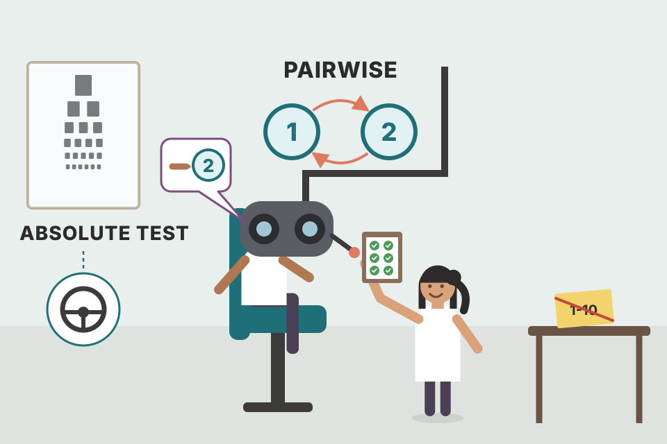
An eye test: the optometrist doesn't ask "rate this lens 1–10", she asks "better with lens 1 or lens 2?" again and again. Comparisons work even when you can't describe absolute sharpness, and they keep working however good the lenses get. Where it breaks: she ends with your best lens, but whether you can now legally drive still needs an absolute reading-chart test (plate 28).
Relative judgments are more reliable for humans than absolute ones: we're poor at calibrated scores but good at noticing differences. And because each new model is compared against the current best, the "test" automatically gets harder as models improve, unlike a fixed benchmark.
"Pointwise or pairwise evaluation?" Say: "Both. Pairwise is easier for raters, captures preference, doesn't saturate and is hard to game, so it's great for choosing between prompt or model variants and as a complement to A/B tests. Pointwise and functional metrics tell me if the system is good enough and how it maps to business outcomes."
| Term | Meaning |
|---|---|
| Entropy H(P) | Average information per token of the data, in bits; how hard it is to predict. |
| Cross entropy H(P,Q) | How hard the data is for model Q to predict = H(P) + KL(P‖Q). Not symmetric. |
| KL divergence | How far the model's distribution Q is from the true P; 0 if identical. |
| BPC / BPB | Bits per character / per byte of original data; tokenizer- and encoding-independent versions of cross entropy. |
| Perplexity (PPL) | 2^H (bits) or e^H (nats): effective number of next-token options; lower = more certain. |
| Bit vs nat | Units for log base 2 vs base e; PyTorch/TensorFlow use nats. |
| Logprobs | Log-probabilities a model gives tokens; needed for perplexity; not all APIs expose them. |
| Exact vs subjective evaluation | Exact: deterministic score. Subjective: depends on the evaluator. |
| Functional correctness | Does the output do the intended job (e.g. code passes tests)? Also execution accuracy. |
| pass@k | Share of problems where at least one of k samples passes all tests. |
| Reference-based / reference-free | Metric needs ground-truth (canonical) responses / doesn't. |
| Exact match | Output equals a reference (binary). |
| Lexical similarity | Surface overlap: edit distance (fuzzy matching), n-grams; BLEU, ROUGE, METEOR++, TER, CIDEr. |
| Semantic similarity | Similarity of meaning via embeddings and cosine; BERTScore, MoverScore. |
| Embedding | Vector (100–10,000 numbers) capturing meaning; judged by closeness of similar items, MTEB. |
| Multimodal (joint) embedding | One space for several modalities (CLIP, ULIP, ImageBind). |
| AI judge | Model + prompt (+ sampling settings) that evaluates outputs. |
| Self / position / verbosity bias | Judge favours its own output / the first option / longer answers. |
| Spot-checking | Evaluating a sample of responses to save cost. |
| Reward model / reference-based judge / preference model | Specialised judges: score (prompt, response) / compare to reference / pick the better of two. |
| Pointwise vs comparative evaluation | Score each model alone vs rank from head-to-head matches. |
| Win rate | Share of A-vs-B matches A wins. |
| Elo / Bradley–Terry / TrueSkill | Rating algorithms turning matches into scores; Elo is order-sensitive. |
| Transitivity | A > B and B > C imply A > C; may not hold for preferences. |
| Saturation | A benchmark stops being useful once models score perfectly. |
| Name | What it does with the idea |
|---|---|
| PyTorch, TensorFlow | Report cross entropy in nats; perplexity = e^loss. |
| OpenAI GPT-2 report | Showed bigger models get lower perplexity (Table 3-1). |
| HumanEval (OpenAI), MBPP (Google) | Code benchmarks scored by functional correctness / pass@k. |
| Spider, BIRD-SQL, WikiSQL | Text-to-SQL benchmarks using functional correctness. |
| LeetCode, HackerRank | Validate submissions with unit tests. |
| WMT, COCO Captions, GEMv2 | Benchmarks using lexical similarity (BLEU, CIDEr…). |
| Adept Fuyu | Correct captions scored low because references lacked them (Fig 3-5). |
| BERT, CLIP, Sentence Transformers; OpenAI Embeddings API; Cohere Embed v3 | Embedding models (sizes in Table 3-2); BERTScore uses BERT. |
| MTEB | Benchmark of embedding quality across tasks. |
| Criteo, Coveo, Pinterest | Embeddings for products, images, graphs, queries, users. |
| ULIP, ImageBind | Joint embeddings for 3D point clouds / six modalities. |
| Azure AI Studio, MLflow, LangChain, Ragas, LlamaIndex | Built-in AI-judge criteria (Tables 3-3, 3-4), not standardised. |
| MT-Bench, AlpacaEval | Showed AI judges agree well with humans (85%; 0.98 correlation). |
| Cappy, BLEURT, Prometheus, PandaLM, JudgeLM | Specialised judges: reward, reference-based, preference models. |
| LMSYS Chatbot Arena | Crowdsourced pairwise votes; Elo then Bradley–Terry; filters hard prompts. |
| Scale | Private comparative leaderboard with trained evaluators. |
| ChatGPT | Asks users to pick between two responses (Fig 3-10). |
| Anthropic | First used comparative evaluation for models (2021); called for evaluation funding. |
| EleutherAI lm-evaluation-harness (Beyond the book in this chapter; covered in Ch.4) | Runs many benchmarks, including perplexity-style tasks. |
2³ = 8 for bits. For 3 nats, e³ ≈ 20.1. Perplexity uses the base that matches the unit.
H(P,Q) = H(P) + D_KL(P‖Q). KL is zero when the model's distribution Q equals the true distribution P, so cross entropy then equals the data's entropy.
BPC = 3; BPB = 3/(7/8) ≈ 3.43; each 8-bit byte needs 3.43 bits, so the text compresses to under half its size.
More structured data → lower; bigger vocabulary → higher; longer context → lower.
It usually goes up (post-training "collapses entropy"): the model gets better at tasks but worse at predicting raw next tokens, so perplexity is a poor proxy for post-trained models. Quantization can also shift it unpredictably.
Text seen during training has very low perplexity, so a suspiciously low perplexity on a benchmark suggests it was in the training data. For dedup, only add new data whose perplexity is high.
50%. With fewer samples per problem there are fewer chances that one passes all tests.
It accepts wrong answers that happen to contain the reference, e.g. "September 12, 1929" for Anne Frank's birth year (she was born June 12, 1929). Also "15" contains "5".
Need comprehensive references (Fuyu's correct "Big Ben" caption got CIDEr 0.4); references can be wrong (WMT 2023); higher overlap isn't better (BLEU similar for correct and incorrect HumanEval code).
"Your refund was approved" and "your refund was not approved" may get high similarity, so a contradictory answer would pass. Semantic similarity is only as reliable as the embeddings.
That the judge (model, prompt, sampling parameters) is exactly the same. A typo fix or prompt swap can make it more lenient. Don't trust a judge whose model and prompt you can't see.
Self-bias (GPT-4 +10%, Claude-v1 +25% win rate for themselves, Zheng et al.); first-position bias (opposite of human recency bias; mitigate by swapping order); verbosity bias (GPT-4/Claude-1 preferred ~100-word answers with errors over ~50-word correct ones; at 2× length the longer almost always wins).
Four (1 generation + 3 judge calls). Use weaker/specialised judges, or spot-check a sample of responses.
Elo was sensitive to the order of evaluators and prompts. A ranking is correct if higher-ranked models win more than half their matches against lower-ranked ones, i.e. it predicts future match outcomes well.
Comparative evaluation can't answer that: both could be good, both bad, or one each, and a 1% win-rate change maps to very different business gains in different apps. Measure absolute task metrics (e.g. tickets resolved) and do a cost–benefit analysis.
Some entries are identified by author and year as cited in the text; full titles are given where the book or the well-known paper names them.